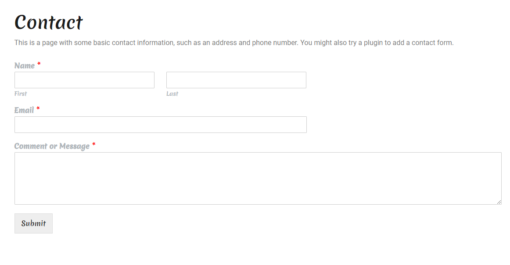

Draft
Software applications have a very important role in the travel industry today, research showing that in the last four years, travel software has been the fastest growing application category in terms of time spent using them, increasing it with 77%.The goal is to create an application that will cater to the needs of travelers through its specifically designed functionalities and it will help guide them throughout their journey, with an accent on web service oriented architecture. This article describes how our solution serves our goal, the interaction with the user, its design and sources of information. The main language of the application is English but it can be translated in any language the user desire from the provided list of languages.
The website puts 8 pages available for the user: Your Baca, Flights & Hotels, Booking, Tour, Search Trip, Contact, Blog. We will talk about every page in the following sections. This User Guide is created in order to familiarize its user with the provided functionalities of the web application:
The flows will start with the user logging in but these is not a prerequisite as the functionalities are still available but the preferences and setting will not be saved. For a user to log in into his account, he has to access the "My account" section and log in with his credentials. If the user doesn't have any credential, he has to access the "Register" section and create the account.
|
|
The registration form requires a desired user name, e-mail address for the validation of the user account and a password is necessary for login into the application. |
|
|
The login form requires the name and password of a registered user. |
Once the user has registered and logged in with the correct credentials, he can reset his password, log out or edit his profile details:
his is the main page of the web application wich will display a map with the current location of the user togheter with an TravelMap where the user can plan his next travel having a route established in this map.

The user can search for location on the map, he can change the map view, he can select starting point and end point for his trip and by saving them, a proposed route shall be displayed to the user.
If the user scrolls down, he can access the functionalities of the Nearby Places map where he can find any kind of location that he wishes to go to just by selecting it from the filter screen from the left side of the screen. By selecting one or more filters, the map will automatically display the nearest location of the desired type.
The user can change the displayed functionalities of the application just by accessing from the top menu, under "Your Baca" section, any of the desired option.
|
|
For example, if he is looking for flights and hotels, he can access the option with the same name: |
|
|
On this page the user can access a map with different destination and find flights to the selected destination just by clicking on them. |
|
|
Also, he can check for flights and their prices for certain months and with the help of a currency calculator, he can check the prices in his local currency. |
|
|
There will also be a section with the current best deals for certain routes of flights that can be of the user interest. |
|
|
Depending on his current location, the user will see the most recommended hotel where he can stay. |
All of the previously presented functionalities will redirect the user to the most recommended websites where he can book a flight or a hotel.
If the user selects the "Booking" option from the top menu, he will see a page with a map with all of the posibilities of places where he can book a stay and he can modify the filters so that the map can display to him only relevant locations.
On this page, the user can check for available tours for him with a recommended location and also can check how much a transport will cost for him by inputing the destination and his pick-up point.
|
|
For example, the current location for a tour is Moscow and the user has the possibility to check for available tour to the displayed location just by clicking on them. |
|
|
On this functionality the user can insert a pick up point and a destination and check an estimated price of a taxi ride, for example, which depends of the travel time selected.. |
By selecting the search trip option from the top menu, the user will be redirected to a form where he ca input his requirements for a desired trip and the application will show him recomendations.
|
|
The user can select filters like : desired destinations, date, a max price, duration of the trip, the difficulty of the trip and also what is the minimum age of the travelers. Depending of all the requirements, trips will be displayed. |
On the top menu, the user can also go the blog section of the website just by selecting the button with the relevant name. On the displayed page the user will see all of our posts. Any news or any changes should be found on this page so that the user can be updated continuously.
In the About page, users can find informations about our team and about our application.
In this page, the user can complete a form and submit it in order to reach to us regarding anything that affects the user experience, any problems, any required help or even any review or feedback about the web application. The user has to complete first and last name, his email address so that we can reply, and the message to be sent to us
In the footer of the pages, the user can find different useful widgets which can be helpful for organising his trips.
|
|
The weather widget will display the current temperature in the current location of the user. |
|
|
This widget will display the firerisk depending on the current location of the user so that he can be aware how dangerous is it for him to go into a forest or any kind of trip that can present risk posibilities |
|
|
The humidity widget will display information about the air humidity, coordinates of the current location, air pressure and rain possibilites for the user that are interested in these information. |
|
The reviews widget will display reviews of the current location or the nearest location of the user that which be helpful. |
In the following video you can see how an user can use the website :
Currently, there are more than one functionality which is not working as expected. The known issues of the current version are: